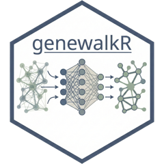

CLAUDE.md
This file provides guidance to Claude Code (claude.ai/code) when working with code in this repository.
What this is
An R package over a Rust crate (extendr/rextendr). Graph methods for computational biology: heat diffusion kernels, node2vec embeddings, GeneWalk (Ietswaart et al.) and embedding-drift detection. All heavy numerics live in src/rust; the R layer validates, marshals and stores results.
Build and test
Sys.setenv(DEV_BUILD = "1") # fast iteration: keeps target dir + shared cargo registry, LTO off
devtools::load_all() # runs configure -> cargo build -> regenerates R/extendr-wrappers.R
devtools::document() # roxygen only; Rust wrappers come from the cargo build
tinytest::test_package("genewalkR") # all tests
tinytest::run_test_file("inst/tinytest/test_genewalk.R") # single filecargo test --manifest-path src/rust/Cargo.toml # Rust-side tests, opt-level 3
cargo clippy --manifest-path src/rust/Cargo.toml
R CMD build . && R CMD check genewalkR_*.tar.gz # vignettes need quartoWithout DEV_BUILD every install rebuilds the full dependency graph with LTO from a cold cargo registry. DEBUG is accepted but ignored: this package is always a release build.
configure runs tools/config.R, which checks the MSRV from DESCRIPTION (SystemRequirements) and expands src/Makevars.in into src/Makevars. Do not edit src/Makevars or src/Makevars.win; they are generated and gitignored.
Architecture
Rust and R boundary
src/rust/src/lib.rs holds the extendr_module! block and every #[extendr] function. The roxygen for those functions lives in the Rust doc comments; src/rust/document.rs (the document bin) regenerates R/extendr-wrappers.R during the cargo build, so never hand-edit that file. Rust modules:
-
graph.rs: edge prep, CSR/CSC sparse types, SpMM, connected components, configuration-model rewiring for permutations. -
diffusion.rs: Laplacians, spectral decomposition (full or truncated), kernel families, and the raw/z/Monte Carlo diffusion methods. -
embedding.rs: node2vec training vianode2vec-rs. -
data.rs: synthetic graph generators (barbell, caveman, SBM, GeneWalk, differential graphs). -
utils.rs: cosine similarity, cross-cosine matrices, p-values, FDR.
bixverse-rs and ann-search-rs are shared crates of Gregor’s; faer does the dense linear algebra.
The diffusion kernel is the one stateful object: rs_diffusion_kernel() returns an ExternalPtr<DiffusionKernel> (spectral decomposition plus transformed eigenvalues) that the R object holds and reuses across diffuse_scores() calls. It does not survive a session restart.
R layer
Three S7 classes carry state through a staged pipeline, each generic returning a new object with more properties filled in:
-
GeneWalk(R/genewalk.R):GeneWalk()->generate_initial_emb()->generate_permuted_emb()->calculate_genewalk_stats(). -
EmbedDrift(R/embed_drift.R):EmbedDrift()->generate_initial_embeddings()->calculate_drift()(Procrustes alignment in Rust). -
DiffusionScores(R/diffusion.R):DiffusionScores()->build_kernel()->diffuse_scores().
Class definitions and their getters sit in R/classes.R. S7::methods_register() runs in R/zzz.R.
GeneWalkGenerator (R6, R/classes.R) is the network factory: add pathway and PPI sources, $build() pulls them from DuckDB into an S3 DataBuilder, then $create_for_genes() subsets to a gene bag and returns a GeneWalk. The point is iterating over many gene bags against one loaded network.
node2vec() (R/node2vec.R) is the plain functional entry point: no class, edge table in, embedding matrix out.
Parameters and validation
Every tunable set goes through a params_*() wrapper in R/params.R returning a named list, validated by a check*/assert* pair in R/checkmate_ext.R (assert* built with checkmate::makeAssertionFunction()). Rust receives these lists and parses them into its own config structs. Adding a parameter means touching the wrapper, the checker, and the Rust-side parser.
Data
Runtime data is a DuckDB file downloaded on first use from a GitHub release into tools::R_user_dir("genewalkR", "cache"). get_db_connection() opens it read-only, reload_db() wipes and re-fetches. The get_* accessors in R/data.R are raw SQL through DBI::dbGetQuery(), coerced to data.table with string columns turned into factors.
The ingest_*, obo_parser() and download_* functions in R/data_processing.R are not exported and never run at analysis time. They build the DuckDB file, and data-raw/pull_data_to_db.R is the script that drives them.
Conventions
- R is formatted with air (
air.toml, format-on-save via the Posit VS Code extension). Vignettes are quarto (.qmd). - Version bumps touch three places:
DESCRIPTION,src/rust/Cargo.tomland the badge inREADME.md. A green R-CMD-check onmaintriggers auto-tagging, so a bump is a release. - The repo tracks a copier template (
.copier-answers.yml);configure,tools/,src/Makevars*.inand the workflows come from it. Fix template bugs upstream where you can.